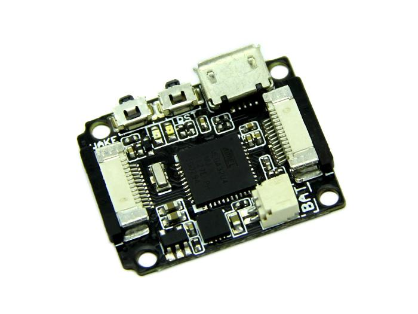
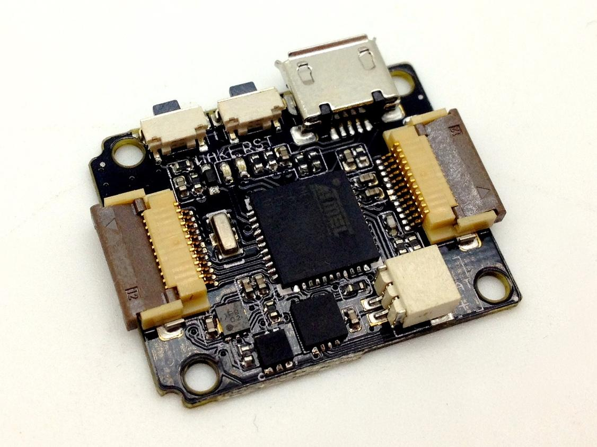
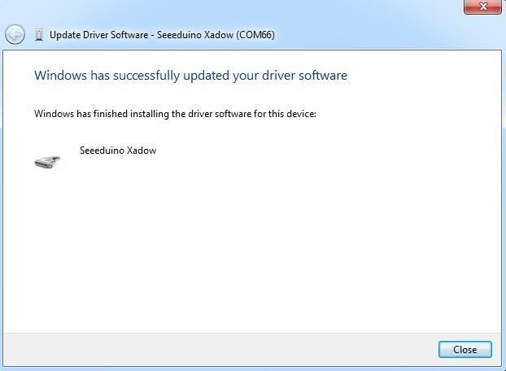
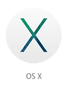

|  |
 |
| Xadow - Main board v1.0
|
Xadow - Main board v1.3
|
The Xadow Main board module is based on the controllerATmega32U4. It features high performance and low power consumption, which makes your project small and portable, especially suitable for wearable projects.
The on-board controller ATmega32U4 has 32K Flash and 2.5K SRAM and 1K EEPROM, it can be also used as a USB slave module, same as the Seeeduino Lite, that you can make much more projects with this. This Board can be powered either from the on-board USB connection or a Lithium battery. Also, there is charge circuit on this module that you can charge for the Lithium battery through the USB port.
The first time you use this Xadow main board, please install the related driver and make little modification as Here.
J1: Micro USB. can be used for charging for Lithium battery and uploading code.
U2: ATmega32U4 IC, 8-bit AVR Microcontroller with 32K Bytes of ISP Flash and USB Controller.
RST: Reset Button. Can reset all system when it connects several Xadow modules.
J2,J3: FPC interface.
U1: CN3065 IC, charge management chip.
BAT: Battery socket, used to hook up LiPo battery,the interface is JST 1.0.
U4: MIC5205-3.3YM5,Voltage Regulators.
Pins on both sides of Xadow modules are symmetrical, here are pins descriptions about J2 Interface from top to bottom.
| Xadow Pins | Microcontroller Pins | Function |
|---|---|---|
| 1 | 9 | (PCINT1/SCLK)PB1 |
| 2 | 10 | (PDI/PCINT2/MOSI)PB2 |
| 3 | 11 | (PDO/PCINT3/MISO)PB3 |
| 4 | 38 | PF5(ADC5/TMS) |
| 5 | 14,34,24,44 | VCC |
| 6 | 5,23,35,43 | GND |
| 7 | 5,23,35,43 | GND |
| 8 | 14,34,24,44 | VCC |
| 9 | 18 | (OC0B/SCL/INT0 )PD0 |
| 10 | 19 | (SDA/INT1)PD1 |
| 11 | 20 | (RXD/INT2)PD2 |
| 12 | 21 | (TXD/INT3)PD3 |
Similar to the Arduino, the Xadow Main Board uses only a single microcontroller (the Atmel ATmega32U4) to both run your sketches and communicate over USB with the computer. This means that you only need a USB cable to program the Xadow. The specific steps are as follows:

Now, you can program and use the Xadow as you use other Arduino boards.
Boards.txt and USBCore.cpp for Arduino IDE v1.6.3

Before you use the Xadow Main board in MAC computer, following below URL to install the driver in OS X system.
http://www.seeedstudio.com/recipe/index.php?controller=recipe&action=show&recipe_id=47
Xadow Main Board
Library of Xadow Main Board